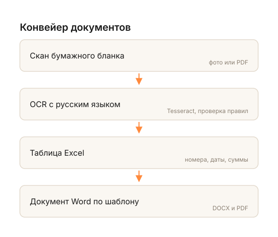

Перевожу сканы и фотографии в электронный вид: таблицы, ведомости, реестры, договоры и акты. Данные проверяются по правилам, ошибки помечаются, а не теряются. От 10 ₽ за страницу.
Прислать документ на пробуТаблицы, ведомости, реестры. Числа, даты и номера сверяются, расхождения помечаются для проверки.
Договоры, приказы, акты — с сохранением структуры и вёрстки.
Папки, которые «руки не доходят разобрать»: от 1 000 страниц, со скидкой и отчётом по каждой.
Скан таблицы → распознавание → Excel → готовый документ Word по шаблону.

| Работа | Цена |
|---|---|
| Скан → PDF, постранично | 10 ₽ / страница |
| Скан → Excel с проверкой | 25 ₽ / страница |
| Скан → Word с вёрсткой | 30 ₽ / страница |
| Срочно, за сутки | +50% |
| От 1 000 страниц | −20% |
Минимальный заказ — 2 000 ₽. Первые 20 страниц бесплатно: вы видите качество на своих документах до оплаты.
Пришлите одну страницу — верну результат в тот же день, бесплатно.
Телефон: +7 ___ ___-__-__
Telegram: @___
Почта: ___@___